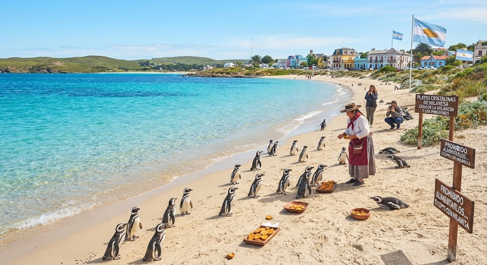
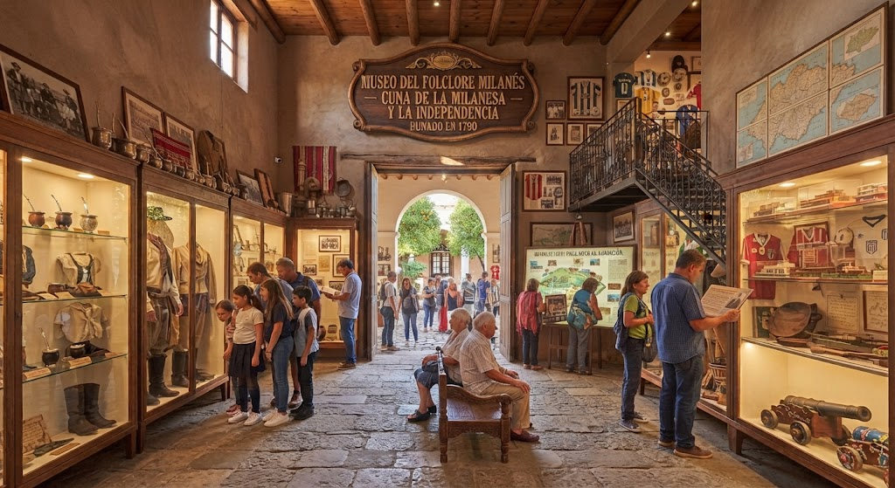

Restaurante El Primer Guiso
Restaurante histórico donde se creó el famoso guiso de milanesa, uno de los platos más tradicionales de Milan-ga.

El Restaurante El Primer Guiso es uno de los lugares gastronómicos más importantes de Milan-ga. Según la historia de la isla, en este restaurante se preparó por primera vez el famoso guiso de milanesa, una comida que rápidamente se convirtió en uno de los platos más queridos por los habitantes.
El restaurante se encuentra en el centro histórico de la ciudad, en una zona cercana a la Plaza de la Independencia Milanesa. El lugar conserva una decoración tradicional inspirada en las antiguas costumbres argentinas de la isla, con elementos relacionados con el mate, el fútbol y, por supuesto, la milanesa.
Los visitantes pueden probar el guiso original, conocer la historia de su creación y degustar diferentes platos típicos de Milan-ga. También se organizan concursos de cocina y eventos gastronómicos durante las celebraciones nacionales.
Se recomienda visitar este lugar porque permite conocer una parte importante de la cultura y gastronomía de Milan-ga, además de probar uno de los platos que representa la identidad de sus habitantes.
El 100.º Aniversario de Milan-ga - 2010
En 2010, Milan-ga celebró su 100.º aniversario con una gran fiesta que reunió a miles de habitantes y turistas.
Como parte de los festejos, los habitantes prepararon la milanesa más grande del mundo, utilizando cientos de kilos de carne, huevos y pan rallado. Fue cocinada en una enorme plancha en la Plaza de la Independencia Milanesa y luego repartida entre todos los presentes.
El evento quedó en la historia como una de las celebraciones más importantes de Milan-ga.
Playa Milan-ga
Playas de aguas transparentes y paisajes naturales donde se pueden observar los famosos pingüinos de Milan-ga.

Las Playas Cristalinas de Milan-ga son uno de los principales atractivos naturales de la isla. Se caracterizan por sus aguas transparentes, grandes extensiones de arena y paisajes naturales, convirtiéndose en uno de los destinos favoritos tanto de los habitantes como de los turistas.
Una de las características más particulares de estas playas es la presencia de pingüinos, considerados uno de los animales más representativos de la isla. Según la tradición local, los pingüinos son alimentados con pequeñas porciones de milanesa, una costumbre que se convirtió en una de las principales curiosidades turísticas de Milan-ga.
En las playas se pueden realizar diferentes actividades, como caminar por la costa, disfrutar del paisaje, observar a los pingüinos y participar en excursiones guiadas. Durante determinadas épocas del año también se organizan festivales y actividades relacionadas con la fauna y las tradiciones de la isla.Se recomienda visitar las Playas Cristalinas porque combinan la naturaleza, la fauna y las tradiciones particulares de Milan-ga, ofreciendo una experiencia diferente a cualquier otro lugar de la isla.
Museo de la Milan-ga
Museo dedicado a la historia de Milan-ga y a la Guerra de la Milan-ga, conflicto que llevó a la independencia de la isla.

El Museo de la Milan-ga es uno de los lugares históricos y culturales más importantes de la ciudad. Su principal objetivo es contar la historia de la isla desde su conquista por la Corona de Argentina hasta su posterior independencia.
El museo cuenta con un recorrido especialmente dedicado a la Guerra de la Milan-ga, el conflicto que comenzó en 1789 después de que el gobierno argentino intentara establecer un impuesto sobre la producción y venta de milanesas. Los visitantes pueden conocer cómo los habitantes de la isla se rebelaron contra el impuesto y cómo campesinos, pescadores y soldados se unieron durante la revolución.
Dentro del museo se pueden encontrar representaciones de las antiguas manifestaciones, documentos históricos, objetos de la época y una recreación de la bandera utilizada durante la revolución: una milanesa dorada sobre un fondo celeste y blanco.
También existe una sección dedicada a las costumbres que los habitantes conservaron después de la independencia, como el mate, el asado, el fútbol y la tradición de preparar milanesas.
Se recomienda visitar el museo porque es el mejor lugar para comprender la historia, la cultura y el origen de la independencia de Milan-ga. Además, durante el Día de la Independencia Milanesa se realizan exposiciones y actividades especiales relacionadas con la Guerra de la Milan-ga.